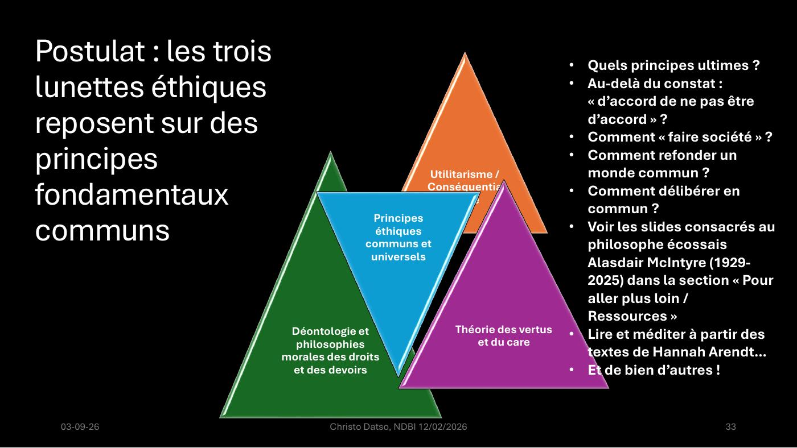
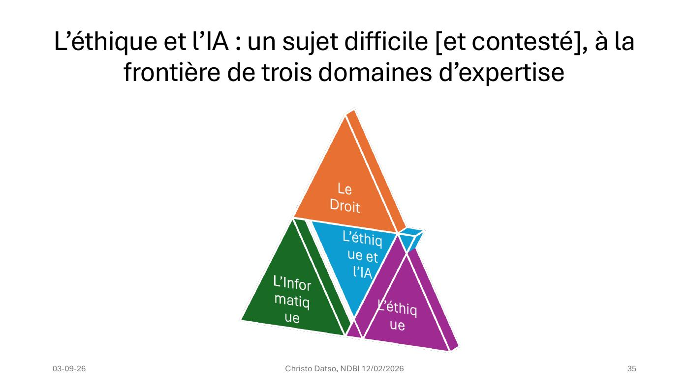

DIAPOSITIVES 31 à 35
Ce que le modèle produit — et ce qu’il ne produit pas.
Reconnaissance faciale en espace public :
| Utile ? | Légitime ? | Désirable ? |
|---|---|---|
| La question de l’utilitariste | La question du déontologue | La question des vertus et du care |
Les trois adjectifs ne sont pas synonymes, et l’exposé les fait correspondre terme à terme aux trois lunettes. Un dispositif peut être utile et illégitime, légitime et indésirable. C’est là que se loge la difficulté réelle.
Trois lignes, et c’est probablement la diapositive la plus honnête de l’exposé. Après avoir construit un modèle à trois grilles, l’orateur refuse d’en faire une machine à décider.

C’est un postulat, l’exposé le dit. Et il ouvre sur une série de questions qui excèdent largement le sujet de l’IA :
L’orateur renvoie ici à Alasdair MacIntyre (1929-2025) — voir la section ressources, fiche 18 — et invite à « lire et méditer à partir des textes de Hannah Arendt… et de bien d’autres ».
Le geste mérite d’être relevé : après avoir montré que les trois cadres divergent irréductiblement sur chaque cas d’IA, l’exposé parie qu’ils partagent un fond commun, sans pouvoir le démontrer. C’est un pari sur la possibilité même de la délibération publique — ce qui, dans un café philo, est exactement le sujet.
« Émancipée du Droit, la “modernité” telle que l’entendent les supporters de l’IA s’est trouvée un artefact de légitimité dans le prétendu “accompagnement” que lui fournissent les éthiciens de l’IA, sortes de nouveaux “idiots utiles”, promus par le marché et certains réseaux sociaux comme LinkedIn. » Manuela Cadelli, opus cité, p. 11, 2025.
L’orateur choisit de projeter la charge la plus dure contre l’activité qu’il est en train d’exercer. Et il y répond, en note :
« Cette charge de Manuela Cadelli contre les “idiots utiles” est en partie justifiée, mais vous noterez que le titre de l’exposé est “L’éthique ET l’IA” et non pas “L’éthique DE l’IA”… car cette dernière expression est en effet beaucoup plus problématique et source de confusions. L’éthique de l’IA sous-entend que l’IA est devenue un sujet de droit, autonome et conscient, soumis à des droits et des devoirs. Nous n’y sommes pas… pas encore ? »
La réponse est précise et elle tient à une préposition. Elle annonce aussi, avec son point d’interrogation final, la fiche 12 — où la question de la personnalité juridique des agents cesse d’être une hypothèse d’école.

« L’éthique et l’IA : un sujet difficile [et contesté], à la frontière de trois domaines d’expertise. » Le crochet est de l’auteur, et il fait suite immédiate à Cadelli.
Le schéma explique la difficulté pratique : pour tenir un propos solide, il faut trois compétences que personne ne réunit — et c’est pourquoi la partie suivante quitte les cadres pour revenir aux faits.